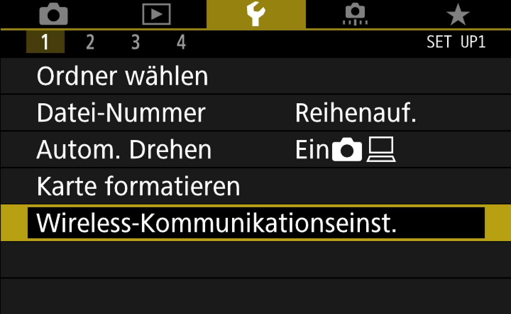
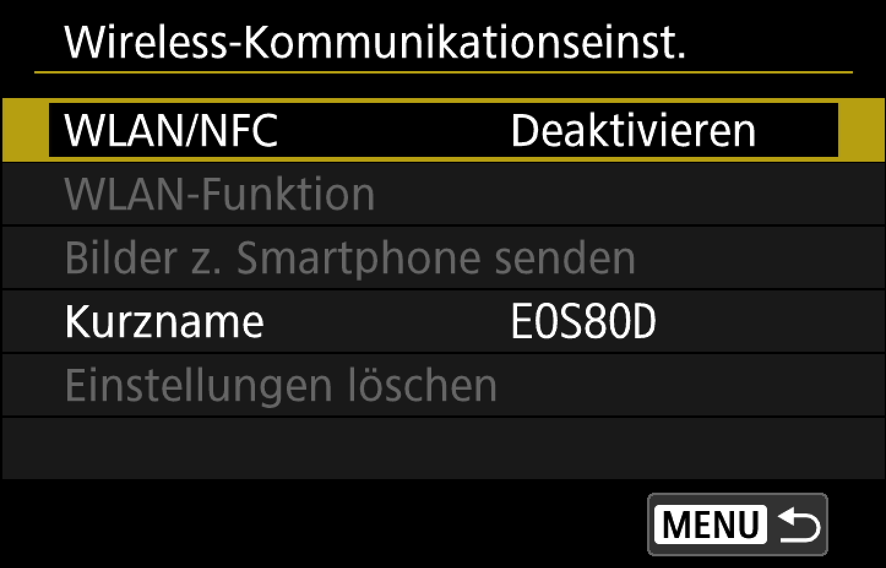
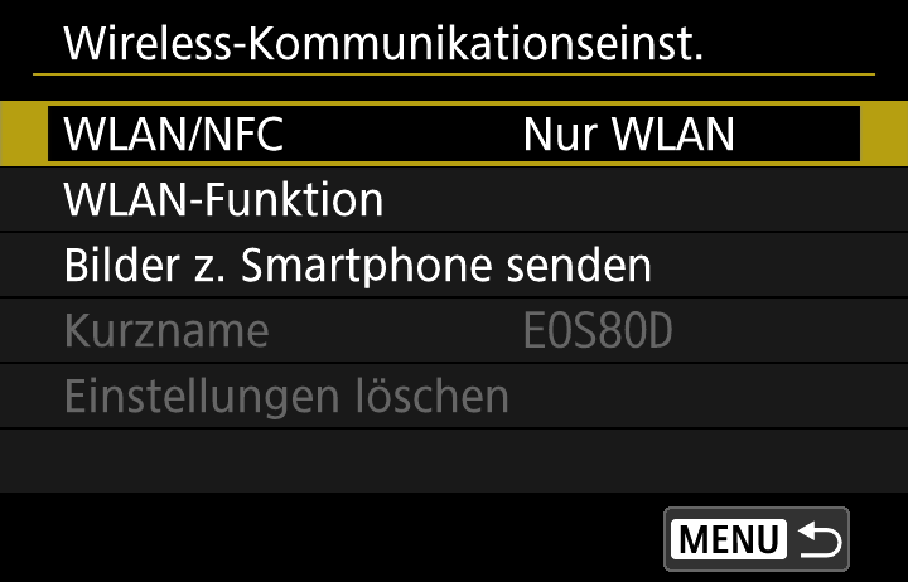
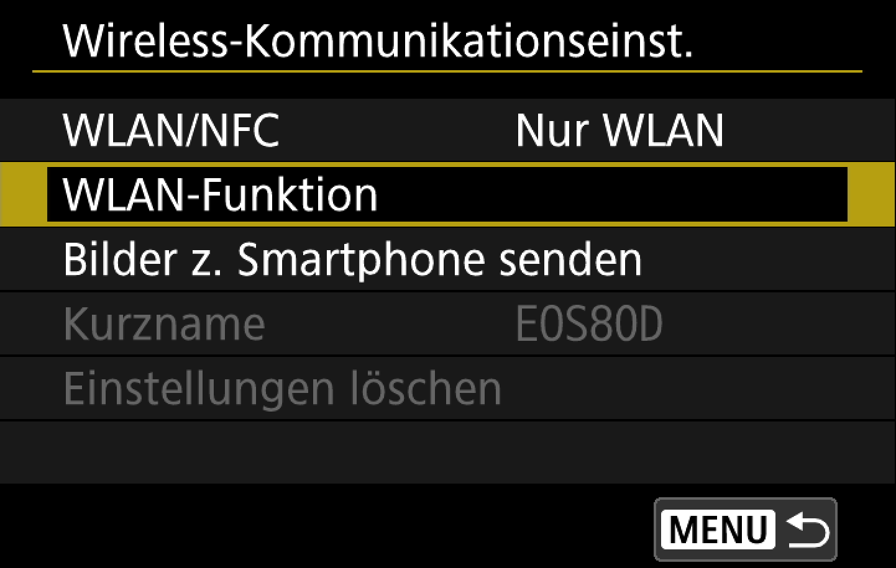
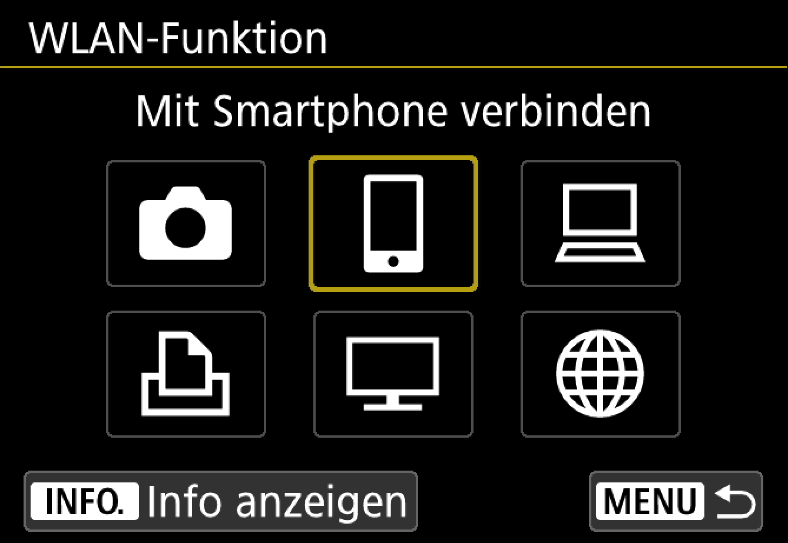
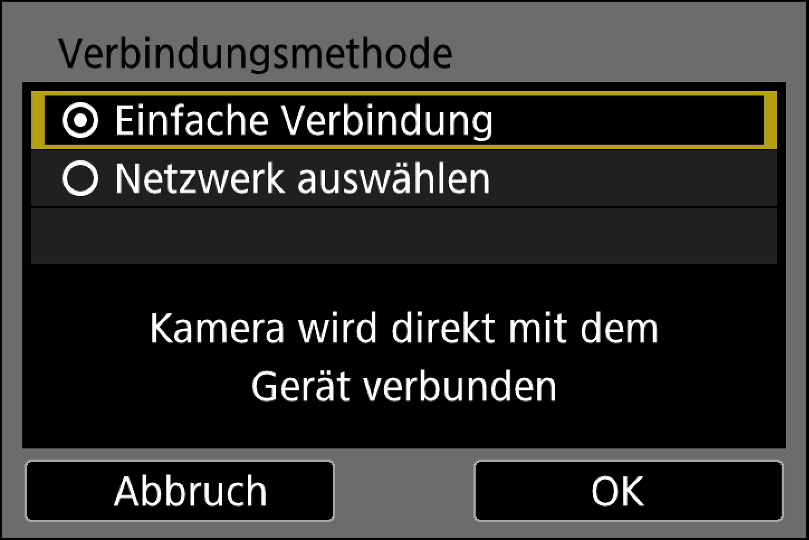
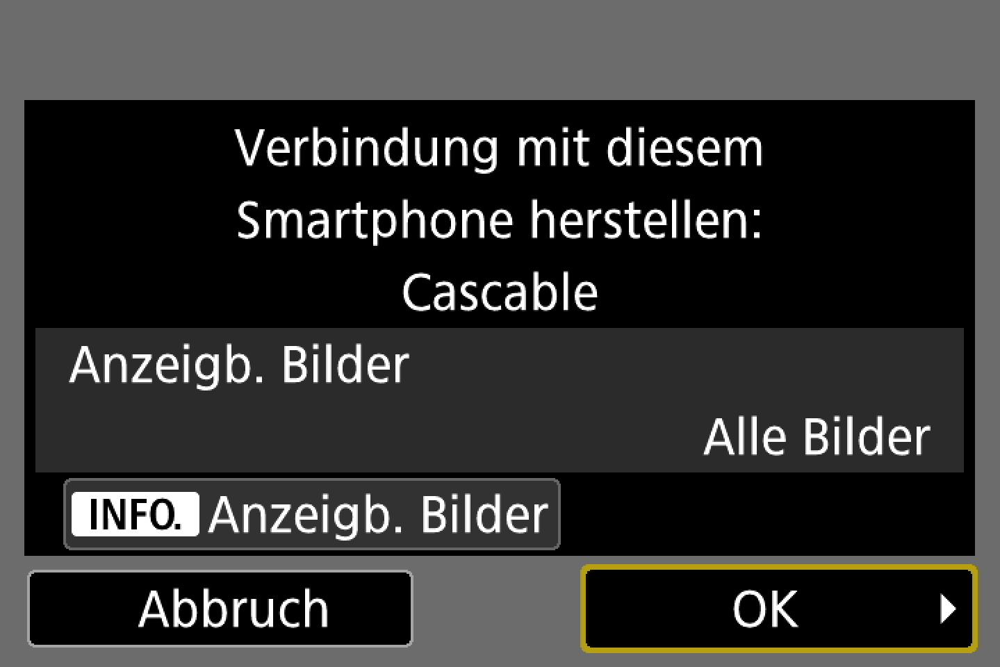

Bevor wir loslegen
- Prüfen Sie, ob Ihre Kamera von Cascable unterstützt wird.
- Prüfen Sie, ob die Firmware Ihrer Kamera auf dem neuesten Stand ist.
- Prüfen Sie, ob Sie die neueste Version von Cascable haben.
Cascable mit Ihrer WLAN-Kamera verbinden
- Drücken Sie die Menu-Taste auf Ihrer Kamera und wechseln Sie im
 Einstellungsmenü zu Wireless-Kommunikationseinstellungen.
Einstellungsmenü zu Wireless-Kommunikationseinstellungen.

- Achten Sie darauf, dass die WLAN/NFC Einstellung aktiviert ist. NFC muss hier nicht aktiviert sein, nur das WLAN für Cascable.


- Folgen Sie den Anweisungen bei der Einrichtung eines Kurzname für Ihr Gerät.
- Wählen Sie nun die nächste Option in den Wireless-Kommunikationseinstellungen. mit Namen WLAN-Funktion.

- Um Cascable für iOS nutzen zu können, wählen Sie die Option Mit Smartphone verbinden.

- Die Kamera führt Sie nun durch die Verbindungseinstellungen, um eine Verbindung mit Ihrem iOS-Gerät herzustellen. Wählen Sie Einfache Verbindung.

- Öffnen Sie auf Ihrem iOS-Gerät Einstellungen > WLAN, wählen Sie Ihr WLAN-Netzwerk aus und geben Sie das Passwort ein, das auf dem Bildschirm Ihrer Kamera angezeigt wird.
- Starten Sie Cascable auf Ihrem iOS-Gerät. Die App wird Ihre Kamera automatisch erkennen und eine Verbindung herstellen. Anderenfalls tippen Sie auf das Verbindungssymbol oben auf dem Display und dann auf Verbinden neben den Namen Ihrer Kamera.
- Bei der erstmaligen Verbindung muss Ihre Kamera mit der App gekoppelt werden (Pairing). Dazu zeigt Cascable diesen Dialog an:
- Zum Fortfahren drücken Sie auf Ihrer Kamera OK. Damit bestätigen Sie die Pairing Anfrage von Cascable.

- Das war’s — Sie sind verbunden!
Allgemeine Fehlerbehebung
Wenn Sie Probleme beim Herstellen der Verbindung zwischen Ihrer Kamera und Cascable haben, folgen Sie bitte diesen Schritten:
- Prüfen Sie, ob keine anderen „konkurrierenden“ Apps in Ihrem Netzwerk wie zum Beispiel Canon EOS Utility aktiv sind.
- Schalten Sie die Kamera aus, warten Sie einige Sekunden, und schalten Sie sie wieder ein.
- Stellen Sie sicher, dass Ihre Kamera und iOS-Geräte mit dem gleichen Netzwerk verbunden sind, bzw. dass Ihr iOS-Gerät mit dem Netzwerk der Kamera verbunden ist.
Erweiterte Fehlerbehebung
Wenn Sie weiterhin Probleme mit dem Verbinden von Cascable mit Ihrer Kamera haben, oder wenn Cascable Ihre Kamera erkennt aber keine Verbindung herstellen kann, probieren Sie Folgendes: Software von Drittanbietern kann verhindern, dass Cascable sich mit Kameras in der Nähe verbindet. Wenn dies der Fall ist, kann Cascable meist die Kamera zwar sehen, sich aber nicht damit verbinden. Im Detail:
- Canon EOS Utility versucht, automatisch eine Verbindung mit Ihrer Kamera herzustellen, wenn das
 Symbol in der Menüleiste auf Ihrem Mac oder in der Symbolleiste auf ihrem PC angezeigt wird. Klicken Sie auf das Symbol und anschließend auf Beenden, um das Programm zu beenden.
Symbol in der Menüleiste auf Ihrem Mac oder in der Symbolleiste auf ihrem PC angezeigt wird. Klicken Sie auf das Symbol und anschließend auf Beenden, um das Programm zu beenden.
- Adobe Lightroom versucht, automatisch eine Verbindung zu Ihrer Kamera herzustellen. Um dies zu unterbinden, wählen Sie Plug-In Manager … aus dem Datei Menü von Lightroom, und deaktivieren Sie das Canon Tether Plugin.
Immer noch Probleme?
Wenn es immer noch nicht funktioniert, gehen Sie bitte auf die Cascable Webseite, damit wir Ihnen weiterhelfen können.